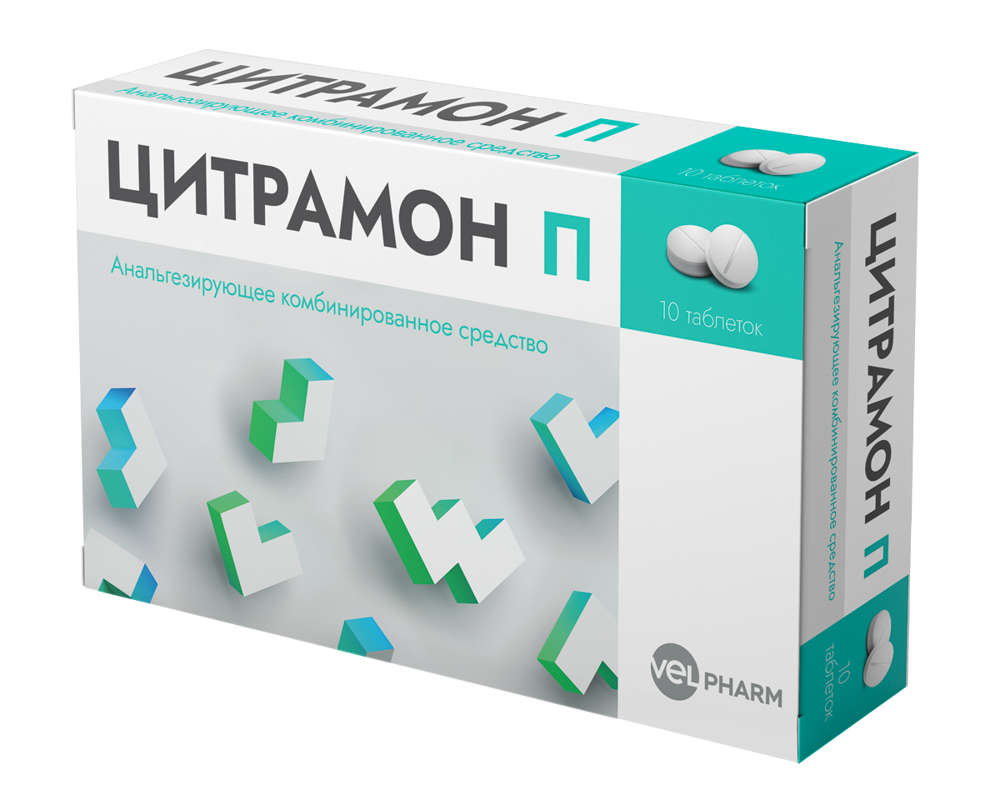
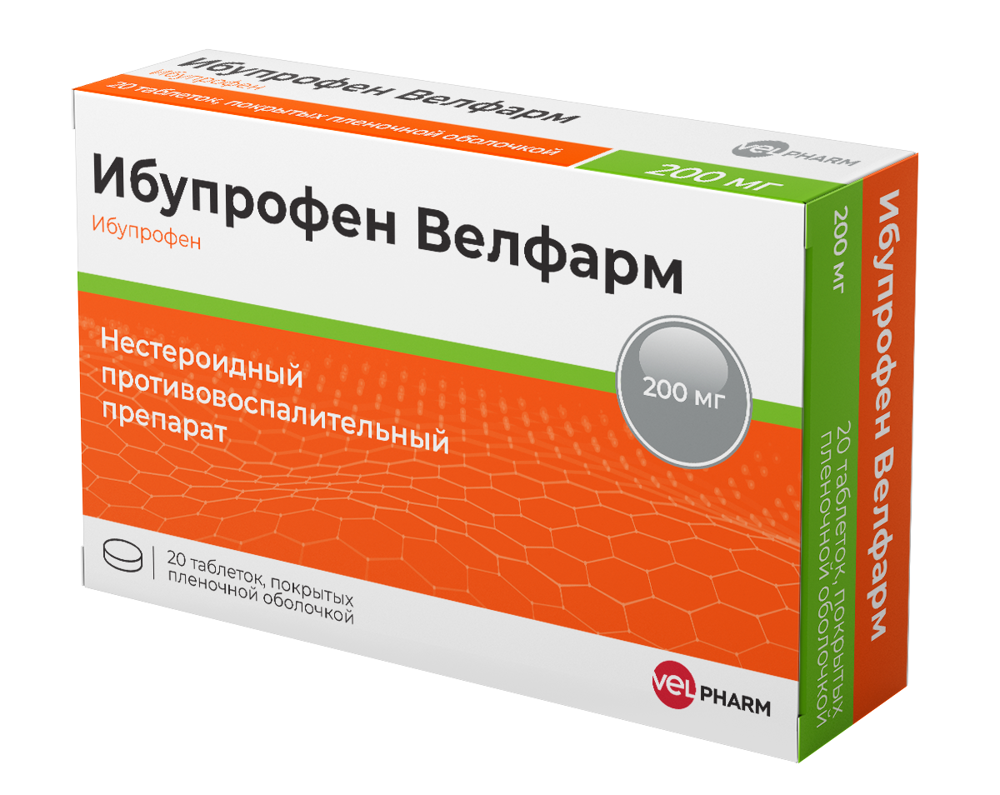
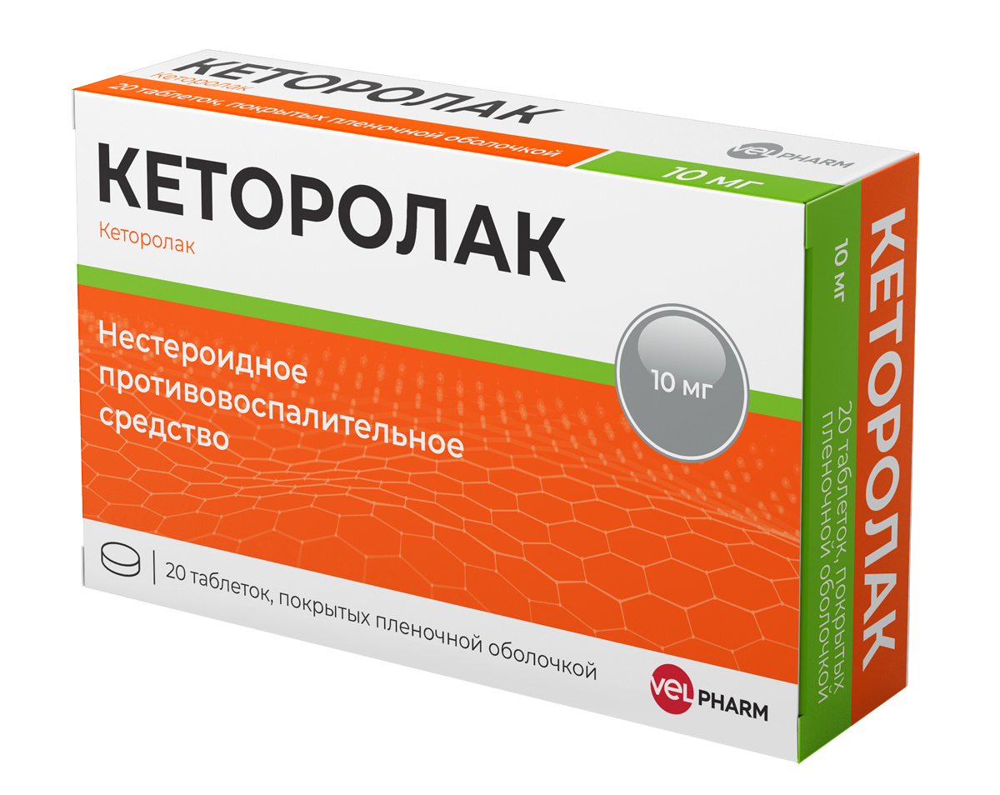
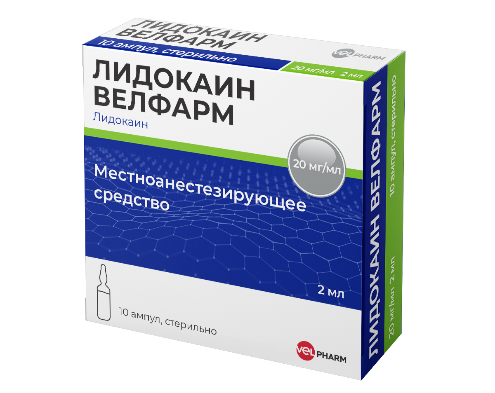

Online Pharmacy
Online Pharmacy

Analgin
430 ₸
Add to Cart
Indications:
The dose depends on the severity of pain or fever, as well as individual susceptibility to the action of analgesics.
The tablets should be swallowed whole withы a sufficient amount of liquid. Initially, the lowest effective dose should be used.
The maximum effect of the drug develops, usually after 30-60 minutes. after ingestion.
- Description:
- Severe acute or chronic pain with injuries and postoperative pain, with colic, with cancer and other conditions where other therapeutic measures are contraindicated.
- Fever resistant to other treatments.
- Dosage regimen:

Paracetamol Velparhm
630 ₸
Add to Cart
Indications:
Inside, with a large amount of liquid, 1-2 hours after a meal (intake immediately after a meal leads to a delay in the onset of action).
In adults, paracetamol is not recommended for use for more than 5 days as an anesthetic and more than 3 days as an antipyretic without the appointment and supervision of a doctor.
In children, paracetamol is not recommended for use for more than 3 days without the appointment and supervision of a doctor.
The interval between doses should be at least 4 hours. The drug should not be taken simultaneously with other paracetamol-containing drugs.
- Description:
- Anesthetic for mild to moderate pain: arthralgia, myalgia, neuralgia, migraine, toothache and headache, algomenorrhea, pain from injuries and burns.
- Antipyretic agent for acute respiratory infections and other infectious and inflammatory diseases accompanied by fever.
- Dosage regimen:

Citramon P
150 ₸
Add to Cart
Indications:
Orally (during or after meals, drinking plenty of water at each dose).
Adults and children over 15 years: 1-2 tablets 2-3 times a day.
The break between doses of the drug should be at least 4 hours.
The average daily dose is 3-4 tablets, the maximum daily dose is 8 tablets.
The course of treatment is no more than 7-10 days.
The drug should not be taken for more than 5 days as an analgesic drug and more than 3 days as an antipyretic (without prescription and supervision of a doctor).
Other doses and regimens are set by the doctor.
- Description:
- - Pain syndrome of mild and moderate severity (of various origins):
- headache
- migraine
- toothache
- neuralgia
- miyalgia
- arthralgia
- algodismenorrhea
- Febrile syndrome in acute respiratory diseases (ARI), including influenza
- Dosage regimen:

Ibuprofen Velpharm
470 KZT
Add to Cart
Indications:
Tablets should be swallowed with water, preferably on time or after meals. Do not take more often than 4 hours later.
The course of treatment without consulting a doctor should not exceed 5 days.
Do not use in children under 12 years of age without consulting a doctor.
If symptoms persist, consult a physician.
- Description:
- - Ibuprofen is used for:
- headache;
- migraine;
- toothache;
- painful menstruation;
- neuralgia;
- back pain;
- muscle pain;
- rheumatic pain and joint pain;
- with a fever with flu and colds.
- Dosage regimen:

Ketorolak
820 ₸
Add to Cart
Indications:
Inside, once or repeatedly, depending on the severity of the pain syndrome.
A single dose - 10 mg (1 tablet), with repeated administration, it is recommended to take 10 mg up to 4 times a day, depending on the severity of the pain.
The maximum daily dose should not exceed 40 mg.
The duration of the course should not exceed 5 days.
To reduce the risk of developing adverse events, the minimum effective dose of ketorolac should be used in the smallest possible short course.
- Description:
- - It is intended for symptomatic therapy, reducing pain and inflammation at the time of application, does not affect the progression of the disease.
- trauma;
- toothache;
- pain in the postpartum and postoperative period;
- oncological diseases;
- myalgia;
- arthalgia;
- neuralgia;
- radiculitis;
- rheumatic diseases;
- dislocations, sprains.
- Pain syndrome of severe to moderate intensity:
- Dosage regimen:

Lidokain Velpharm
230 ₸
Add to Cart
Indications:
The dosage regimen should be selected based on the response of the patient and the injection site.
The drug should be administered at the lowest concentration and lowest dose, giving the desired effect.
The maximum dose for adults should not exceed 300 mg
The volume of solution to be administered depends on the size of the anesthetized area.
- Description:
- Local and regional anesthesia, conduction anesthesia for large and small surgical interventions.
- Dosage regimen: